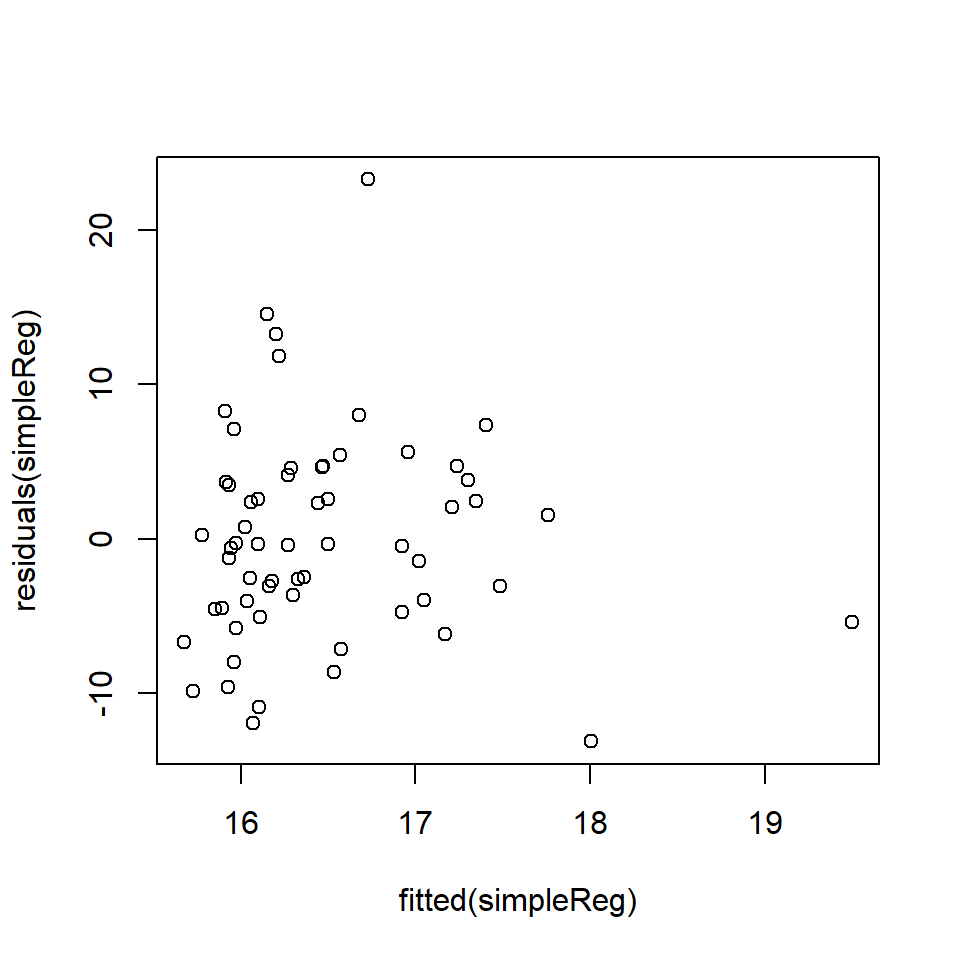

Chapter 18 Linear model diagnostics
18.1 Introduction
Linear models (simple linear regression and multiple regression models) come with assumptions that need to be considered in assessing whether a model is a “good” model in some sense. We have mentioned \(R^2\) in part, which measures the proportion of variability explained by the model, but there are other considerations as well. Also, if the assumptions are not met, then any conclusions from the analysis may not be valid. In this chapter, we look at the model assumptions and how to check they are valid with data.
Fitting linear models is no problem - given a numeric response and some covariates,we can estimate parameters most of the time. Lots of different models may be possible and we want to select between them, or perhaps we have just one theoretical model we want to fit.
How do we convince ourselves that the model is actually any good?
- Our linear models effectively consist of two parts - a mathematical description of the signal and another for the noise.
- We want to check these mathematical descriptions are reasonable given the data.
- We would have more confidence in our predictions, or descriptions, obtained from the model if these assumptions (based on the mathematical descriptions) are met.
18.2 Predictive power
We have previously seen the \(R^2\) statistic:
This can be calculated as the squared correlation between \(y\) and \(\hat{y}\) i.e. agreement between what we observed, \(y\) and what the model predicts, \(\hat y\).
It can be interpreted as the proportion of variance explained by the model:
\[R^2 = 1-\frac{\sum_i (y_i-\hat{y}_i)^2}{\sum_i (y_i-\bar{y})^2} =1 - \frac{SS_{\rm error}}{SS_{\rm total}}\] The \(R^2\) is frequently touted as a measure of the predictive power of the model. Take this with a grain of salt:
- An over-fitted model can have a great \(R^2\), but will predict poorly (you explain your particular sample well, but little else).
- A really good \(R^2\) might be suspicious - have you somehow effectively included the response on both sides of the equation?
Nonetheless a good \(R^2\) is reassuring, but what is a good \(R^2\)?
This is context specific - some things we model have inherently a very low signal-to-noise ratio.
While \(R^2\) scores may be indicative of predictive power, low values do not mean your model is wrong.
It is easy to see that data with high variance could return a low score (since the data will be highly variable), even if we have the correct model for our data.
What is the \(R^2\) for models fitted to EIA data?
Let’s fit a couple of models to the EIA data - one without interactions (model1), the other with interactions (model2) and look at the summaries, in particular the Multiple R-squared value:
# Specify month as a factor
#wfdata$month <- as.factor(wfdata$month)
# Model without interactions
model1 <- lm(Density ~ XPos + YPos + DistCoast + Depth + Month + Phase,
data=wfdata)
# Model with XPos:Phase interaction
model2 <- lm(Density ~ XPos + YPos + DistCoast + Depth + Month + Phase +
XPos:Phase, data=wfdata)# Summary
summary(model1)
Call:
lm(formula = Density ~ XPos + YPos + DistCoast + Depth + Month +
Phase, data = wfdata)
Residuals:
Min 1Q Median 3Q Max
-10.63 -5.17 -3.22 -0.17 1716.61
Coefficients:
Estimate Std. Error t value Pr(>|t|)
(Intercept) 3269.33501 269.04550 12.152 < 2e-16 ***
XPos 0.11797 0.01197 9.854 < 2e-16 ***
YPos -0.55219 0.04443 -12.427 < 2e-16 ***
DistCoast -0.31312 0.06938 -4.513 6.4e-06 ***
Depth -0.45319 0.04080 -11.108 < 2e-16 ***
Month 0.32118 0.14594 2.201 0.0278 *
PhaseB 0.26627 0.35312 0.754 0.4508
PhaseC -1.06083 0.45880 -2.312 0.0208 *
---
Signif. codes: 0 '***' 0.001 '**' 0.01 '*' 0.05 '.' 0.1 ' ' 1
Residual standard error: 27.87 on 31494 degrees of freedom
Multiple R-squared: 0.01293, Adjusted R-squared: 0.01271
F-statistic: 58.93 on 7 and 31494 DF, p-value: < 2.2e-16# Summary
summary(model2)
Call:
lm(formula = Density ~ XPos + YPos + DistCoast + Depth + Month +
Phase + XPos:Phase, data = wfdata)
Residuals:
Min 1Q Median 3Q Max
-11.08 -5.11 -3.22 -0.15 1717.19
Coefficients:
Estimate Std. Error t value Pr(>|t|)
(Intercept) 3.291e+03 2.694e+02 12.214 < 2e-16 ***
XPos 8.507e-02 1.944e-02 4.375 1.22e-05 ***
YPos -5.520e-01 4.444e-02 -12.422 < 2e-16 ***
DistCoast -3.150e-01 6.937e-02 -4.542 5.60e-06 ***
Depth -4.528e-01 4.079e-02 -11.100 < 2e-16 ***
Month 3.218e-01 1.459e-01 2.205 0.02744 *
PhaseB -4.927e+01 1.732e+01 -2.844 0.00446 **
PhaseC -3.923e+00 2.125e+01 -0.185 0.85349
XPos:PhaseB 7.276e-02 2.544e-02 2.860 0.00424 **
XPos:PhaseC 4.195e-03 3.121e-02 0.134 0.89307
---
Signif. codes: 0 '***' 0.001 '**' 0.01 '*' 0.05 '.' 0.1 ' ' 1
Residual standard error: 27.87 on 31492 degrees of freedom
Multiple R-squared: 0.01324, Adjusted R-squared: 0.01296
F-statistic: 46.95 on 9 and 31492 DF, p-value: < 2.2e-16- We see the
model1andmodel2describe 12.7% and 13.0% of the sample variance, respectively. - The more complicated model (
model2) describes more variability in the data, as we might expect (the simpler model is just the more complex one with some terms removed). - 13% may not sound a lot - but things in the natural world are complex - there is likely to always be a lot of stuff we can’t explain. (We would think \(\sim 20\%\) is pretty good!)
- A good \(R^2\) is context specific - it need not be large for the model to be good/useful.
18.2.1 Signal versus noise
Recall - we’re breaking our observed data down into two broad components: signal (explained by a model) and noise (see below). The example below is a linear model - despite being wiggly.
In more mathematical terms, the data can be described as a signal plus noise which in turn can be considered as:
\[{\rm outcome} = {\rm model} + \rm{noise}\]
which we can think of as:
\[y=f({\rm covariates}) + {\rm noise}\]
where the model for the signal is all the bits we put in \(f(.)\). Things like
\[f(x) = \beta_0 + \beta_1x_1 + \beta_2 x_2 + \beta_3(x_1 \times x_2) + ... \beta_p x_s\]
The model for the noise captures all the bits left over after \(f(\textrm{covariates})\) is subtracted from the response: \[y - f(x) = {\rm noise}\]
- We model the noise using probability distributions (noise is supposed to be stochastic (random) after all).
- We will only use one distribution - the normal distribution but distributions are possible.
- Therefore, when we estimate and subtract the signal from the response, the stuff left over should look like (independent) draws from a single normal distribution.
18.3 Model assumptions
The commonly quoted list of assumptions for linear models relate mainly to the noise. We assume the errors:
are well described by a normal distribution, with a mean of zero.
have constant variance (quantified by \(\sigma^2\)) and are not related to the mean of the fitted values (or anything else),
are independent of each other.
We also assume our model for the signal is correct - but if it were not, this might be evidenced in the estimated errors.
18.3.1 Normality assumption
We assume one normal distribution provides the (independent) noise. This is the same assumption we encountered earlier so once the signal has been subtracted from the response, differences should be indistinguishable from random draws from a normal distribution. A normal distribution has two parameters - mean and variance (or standard deviation). The mean should be zero and there is only one variance governing it, hence the constant variance assumption.
The noise is the response with the model for the signal subtracted i.e. \(y-\hat{y}\), the residuals. Therefore, to examine noise, we look at the distribution of the residuals. What do we expect to see?
Once we remove \(\hat{y}\) from our \(y\), the remains ought to look something like these shapes (variances, or spread, may vary) (Figure 18.1).
Figure 18.1: Residuals plotted against explanatory variable X and show a broad band of scatter above and below the blue line. The histogram is the distribution of residuals and indicates that the mean is zero.
18.3.1.1 Assessing Normality
There are two main approaches to assessing whether data are normally distributed:
A somewhat, qualitative assessment from plotting either:
- a histogram of residuals, or
- a QQ-Norm plot of residuals
A formal test of normality (there are several) e.g.
- Wilks-Shapiro test for normality
- Kolmogorov-Smirnov test for normality
Histogram of residuals
If we look at the residuals from model1 fitted to the EIA data (Figure 18.2), the residuals appear to be right skewed compared with what we would expect from a normal distribution.
Figure 18.2: EIA model residuals compared to a normal distribution
QQ-Norm plots
QQ (Quantile-Quantile)-Norm plots:
- display the quantiles of two sets of data (in essence their distributions) against one another.
- If their shapes are similar, then you tend to get a straight line.
- For a QQ-Norm plot, a normal distribution is the reference distribution.
- If your data is roughly normally distributed, the QQ-Norm plot should be a straight(-ish) line.
- Note: small samples can be a bit wiggly, even if normally distributed.
For our model1 the residuals are plotted in Figure 18.3 in comparison to actual normal residuals (right).
Figure 18.3: Left. QQ-Norm plot of the residuals from model1., Right. QQ-Norm plot of normally distributed residuals.
A QQ-Norm plot is created by sorting the residuals in order and plotting against the standardised quantiles for the distribution of interest for a given range of probabilities. Typically the \(i\)th point is given by: \[p(i) = i/(n+1)\]
If \(n\) is 200 then the quantiles are 1/200, 2/201,3/201…200/201.
The quantiles from a normal distribution can be obtained by qnorm in R. The code to illustrate a QQ-Norm plot is shown below. In the EIA data, we have \(n = 31502\).
# Sort residuals - smallest to largest
sortedresiduals <- sort(residuals(model1))
# Number of residuals
print(length(sortedresiduals))[1] 31502# Obtain points
pts <- seq(1/31503, 31502/31503, by = 1/31503)
# Obtain theoretical quantiles (using standard normal)
stannorm <- qnorm(pts)
# Check length
length(stannorm)[1] 31502# Plot theoretical quantils against sorted residuals
plot(stannorm, sortedresiduals)Figure 18.4: “Handmade” QQ-Norm plot of the EIA model residuals
Shapiro-Wilks test for normality
The research hypothesis for this test is in the title, i.e. is the data normally distributed? The Shapiro-Wilks (S-W) test is complicated but it sort of produces a statistic which relates to the straightness of the QQ-norm plot.
The null hypothesis is \(H_0\): the data are normally distributed.
- If the p-value is large (e.g. \(>0.05\)) then we fail to reject \(H_0\), i.e. the data is plausibly normally distributed.
The S-W test for model1 is:
shapiro.test(sample(residuals(model1), size=3000, replace=FALSE))
Shapiro-Wilk normality test
data: sample(residuals(model1), size = 3000, replace = FALSE)
W = 0.14597, p-value < 2.2e-16N.B. R allows only a maximum of 3000 points entered into the Shapiro-Wilks tests hence the use of the sample command to select a random sample of points.
From the plots and output, we conclude that for model1:
The data are not normally distributed
- The histogram is right skewed
- The points in the QQ-Norm plot do not lie on straight line
- The p-value for the S-W test is very small - we reject the null hypothesis that the data is normally distributed.
The skewness could be affecting the inference about model parameters, and we would have to resort to a method which does not assume normality (e.g. a bootstrap-based method) for comparison.
We advise using QQ-Norm plots for ascertaining if residuals are normally distributed (others may disagree):
- We only require the noise model is approximately normal (and there are no normal distributions in reality)
- Large samples tend to fail normality tests even though they are very close to normal.
18.3.2 Assessing constant error variance
We assume the errors (our model for the noise) are well described by a normal distribution with mean zero and variance (\(\sigma^2\)), i.e. \(\epsilon \sim N(0,\sigma^2)\). We can assess the assumptions about the errors using the estimates for these errors, the residuals (\(y-\hat{y}\)).
We assume error variance is a constant and does not increase or decrease with covariates or the fitted values. Of course - it’s only one normal distribution!
If this assumption is violated then the standard errors and \(p\)-values associated with each covariate will be the wrong size.
We can check this assumption visually by plotting the fitted values (\(\hat{y}\)) versus the residuals.
We should see a pattern-less horizontal band if constant error variance is reasonable (e.g. see code below).
We can also check this more formally using a Breusch-Pagan test (\(H_0\): constant error variance) and non-constant error variance is evidenced by a large test statistic and small \(p\)-value.
We compare these tests for residuals that are normally distributed and the residuals from model1. First, the ‘perfect’ data (Figure 18.5).
# Generate perfect data
set.seed (101)
x <- seq(1,1000)
y <- 2*x+rnorm (1000,0,5)
df1 <- data.frame (x,y)
# Fit model to perfect data
modelperfect <- lm (y~x)
# Plot fitted values against residuals
plot (fitted(modelperfect), residuals(modelperfect))Figure 18.5: Plot of fitted values against residuals - there is no pattern in the residuals.
# Formal test
ncvTest(modelperfect)Non-constant Variance Score Test
Variance formula: ~ fitted.values
Chisquare = 0.6569132, Df = 1, p = 0.41765The \(p\)-value associated with the test statistic for normally distributed data is 0.42 which suggests unsurprisingly, no problem.
Compare this to the residuals from model1 which show a very distinct pattern (Figure 18.6):
# Plot fitted values against residuals
plot (fitted (model1), residuals (model1))Figure 18.6: Plot of fitted values against residuals from the EIA model1 showing a distinct pattern.
# Formal test
ncvTest(model1)Non-constant Variance Score Test
Variance formula: ~ fitted.values
Chisquare = 26372.76, Df = 1, p = < 2.22e-16The residuals in Figure 18.6 appear to violate the constant error variance assumption;
- the variance of the residuals appears to increase with the fitted values, and
- there is also a boundary effect because the density cannot be less than one.
- The Breusch-Pagan test suggests strong evidence of non-constant error variance (\(p\)-value<0.0001).
Figure 18.6 has many points and is therefore very difficult to interpret:
- For this reason, uncluttering this plot by dividing the fitted range into non-overlapping categories and calculating the variance of the residuals in each category is helpful, for example (Figure 18.7).
Figure 18.7: The fitted values against the variance of the residuals (simplified) for a model similar to the interaction based model. The variance assumed under the model is represented by the solid horizontal line.
It can clearly be seen that the variance does increase with an increase in fitted values.
In the models we have fitted to the EIA data, there is:
An increasing mean-variance relationship:
- The residual variance clearly increases with the fitted values (Figure 18.6) which violates a key assumption.
- At this point any model conclusions are purely speculative - we need to improve our model before we can reliably interpret any \(p\)-values.
We have not commented on the negative densities predicted by the model (Figure 18.6, x-axis):
- We can also see the current model returns negative fitted values, while the input data (counts/area) are never negative.
- This is a common problem when fitting normal-errors based models to continuous data that is bounded by zero. We will address this problem in the next chapter.
18.3.3 Assessing independence
A crucial model assumption is that the errors are independent and are not correlated in time/space. This assumption is really, really, important!
- Violation of this assumption means the standard errors and \(p\)-values are systematically too small (or large) and we risk drawing the wrong conclusion about model covariates.
We can visually check for correlation in the residuals by plotting the residuals in observation order (if observation order is relevant) and, if we have independence, there should be no systematic patterns (e.g. Figure 18.8).
The null hypothesis of uncorrelated errors can also be formally tested using a Durbin-Watson test:
- This test is based on the idea that if consecutive residuals are correlated then consecutive residuals will be related,
- The null hypothesis is that the residuals are uncorrelated, i.e. \(H_0: \rho=0\) (e.g. Figure 18.8), versus the alternative hypothesis that \(H_1: \rho \neq 0\),
- a test statistic is generated based on sequential differences in the residuals.
- The test statistic is then compared against a critical value and this determines the associated \(p\)-value.
- As with other hypothesis tests, a small \(p\)-value provides evidence against \(H_0\) and would suggest correlated errors.
Figure 18.8: Residuals from a model fitted to data simulated under a linear model with normal errors, plotted in order.There is no systematic pattern in the residuals and they switch between positive and negative residuals at random.
The residuals of model1 appear to be correlated when plotted in observation order (Figure 18.9) and the Durbin-Watson test (below) confirms this positive correlation:
- the correlation coefficient is \(0.15\) and the \(p\)-value is extremely small).
library(car)
# Plot first 100 points
plot (seq(1,100), residuals(model1)[1:100], type="l", xlab="Sequence")
points(seq(1,100), residuals(model1)[1:100])
abline (h=0,lty=2)Figure 18.9: The first 100 residuals in model1
# Formal test
durbinWatsonTest(model1) lag Autocorrelation D-W Statistic p-value
1 0.1495375 1.700924 0
Alternative hypothesis: rho != 0In this case, we could be falsely concluding that one, or more variables, are related to the response because the standard errors are underestimated because of the positive correlation.
18.3.4 Pseudoreplication
Independence may by violated in more philosophical ways which cannot be detected by a test e.g. pseudoreplication.
Pseudoreplication is an inappropriate level of replication for the hypothesis under consideration. For example, if we were interested in the question “Does drinking a cup of coffee raise blood sugar?” a ‘control’ person could be given a glass of warm water and a ‘treatment’ person a cup of coffee. Twenty blood samples could be then be taken from each subject. However, it would be wrong to assume this was a sample size of 40 because the samples are not independent. In reality, we have two samples, one from each person. Treating the data points as 40 independent samples would be an example of pseudo replication.
However, pseudoreplication can be difficult to spot. Imagine we were investigating the hypothesis that chimps change their activity when in zoos. It would be tempting to sample the behaviour (for example, frequency of face scratching per hour) of 20 chimps from say Edinburgh zoo and compare them to 20 chimps from a troop of chimps in the wild. But is this really 40 independent data points? Perhaps the appropriate sampling unit is “troop” so we really only have two data points (a mean from each chimp group).
18.3.5 Linearity in the model for the signal
The signal in the simple linear model is assumed to be linear. Despite the name `linear’ model, this does not mean simple straight lines apply. For example, this is a linear model, but can be very curvaceous:
\[ y = \beta_0 + \beta_1 x + \beta_2 x^2 + \beta_3 x^3 + \beta_4 x^4 + ... + \beta_p x^p + \epsilon \]
However, this type of model is beyond this module.
When fitting regression models it is useful to ask the questions:
- Have I fitted straight lines where curves should be used?
- Have I included the covariates that give rise to the signal?
- Have I fitted factors where appropriate?
Single variable case
With only one explanatory variable, non-linearity will be easy to spot by simply plotting the variables i.e. \(x\) against \(y\). Examples are shown in Figure 18.10:
Figure 18.10: Non-linear signals in the data. Two sets of data that show different non-linear signals between the response and explanatory variables.
More formally, we typically plot a ‘fits-residual’ plot (i.e. fitted values on the \(x\)-axis and residuals on the \(y\)-axis) as previously used to check for non-constant error variance but it can also be used to check for nonlinearity.
Example Consider the non-linear data in Figure 18.10. The corresponding fits-residual plots are shown in (Figure 18.11) and these indicate distinct patterns.
par (mfrow =(c(1,2)))
model1 <- lm (y1~x1)
plot (fitted (model1), residuals (model1))
model2 <- lm (y2~x2)
plot (fitted (model2), residuals (model2))Figure 18.11: Non-linearity in the residuals.
In both these non-linear cases, a distinct pattern can be seen in the fits-residual plot implying some unaccounted for signal in the model. A linear model is not sufficient for these data.
Any pattern in the fits-residual plot could be caused by error heterogeneity (non-constant variance) or by a mis-specified model.
18.4 Example: Diagnostics with the medical data
We now illustrate diagnostics for a simple linear model fitted to the medical data. We fit two simple regression models and check the diagnostics for each model; the first model does not fulfill all the assumptions of a linear model.
As a reminder, let’s look at the data available in the TEON data set:
head(meddata, n=2) gend age vitdresul vitdc vit.12 vitbc folate TEON teonpres ageTEON
1 female 50 10.98 insufficiency 310 normal 19.17 Yes 1 YesOld
2 female 39 13.46 insufficiency 238 normal 8.16 Yes 1 YesOldLet us consider diagnostics for a linear model where a factor (presence/absence of TEON) is used as an explanatory variable to model vitamin D level (vitdresul). With two factor levels, this is like a two sample \(t\) test.
# Set No to be reference level for TEON
meddata$TEON <- relevel(as.factor(meddata$TEON), ref='No')
# Fit model with factor
TEON_lm <- lm(vitdresul ~ TEON, data=meddata)
# Summary of model
summary(TEON_lm)
Call:
lm(formula = vitdresul ~ TEON, data = meddata)
Residuals:
Min 1Q Median 3Q Max
-10.1262 -3.7462 -0.2462 2.4929 20.3938
Coefficients:
Estimate Std. Error t value Pr(>|t|)
(Intercept) 19.5862 0.8499 23.046 < 2e-16 ***
TEONYes -8.8890 1.4365 -6.188 6.67e-08 ***
---
Signif. codes: 0 '***' 0.001 '**' 0.01 '*' 0.05 '.' 0.1 ' ' 1
Residual standard error: 5.307 on 58 degrees of freedom
Multiple R-squared: 0.3976, Adjusted R-squared: 0.3873
F-statistic: 38.29 on 1 and 58 DF, p-value: 6.666e-08We want to check the assumptions of normality, constant variance and independence.
Each datum comes from a different patient/subject and so the independence assumption should be satisfied. We now check the constant variance assumption using a Breusch-Pagan test on the residuals.
# Non-constant variance test
ncvTest(TEON_lm)Non-constant Variance Score Test
Variance formula: ~ fitted.values
Chisquare = 2.056848, Df = 1, p = 0.15152If the residuals were heteroscadastic (The property of the variances not being homogeneous) then these data could be analysed using a two sample \(t\) test, specifying that the variances were unequal. However, all is well; we can now investigate normality of the residuals.
# Save residuals
estNoise <- residuals(TEON_lm)
# Histogram of residuals
hist(estNoise) Figure 18.12: Histogram of medical residuals
This histogram looks roughly normal but it is wise to test further.
# QQ-Norm plot
qqnorm(estNoise)Figure 18.13: QQ-Norm plot of the medical model residuals.
# Test of normality
shapiro.test(estNoise)
Shapiro-Wilk normality test
data: estNoise
W = 0.93151, p-value = 0.002304So the normality assumption has not been met.
Now we consider a simple regression model from the medical data set:
# Fit model with continuous variable
simpleReg <- lm(vitdresul ~ folate, data=meddata)
# Summary
summary(simpleReg)
Call:
lm(formula = vitdresul ~ folate, data = meddata)
Residuals:
Min 1Q Median 3Q Max
-13.1034 -4.4947 -0.3768 3.8585 23.2495
Coefficients:
Estimate Std. Error t value Pr(>|t|)
(Intercept) 15.44131 1.61776 9.545 1.69e-13 ***
folate 0.09022 0.11856 0.761 0.45
---
Signif. codes: 0 '***' 0.001 '**' 0.01 '*' 0.05 '.' 0.1 ' ' 1
Residual standard error: 6.805 on 58 degrees of freedom
Multiple R-squared: 0.009884, Adjusted R-squared: -0.007187
F-statistic: 0.579 on 1 and 58 DF, p-value: 0.4498# Plot of fitted v. residuals
plot (fitted (simpleReg ), residuals (simpleReg))
This is a tricky graph to interpret because the spread of residuals seems wider to the left, BUT this might be a feature of the larger amount of data in this range. To formally check, we can undertake a Breusch-Pagan test for non-constant variance.
ncvTest(simpleReg)Non-constant Variance Score Test
Variance formula: ~ fitted.values
Chisquare = 0.04315852, Df = 1, p = 0.83543Based on these results, there is no reason to reject \(H_0\) that the residuals are homogeneous. The next step is to evaluate the normality of the residuals with a QQ-Norm plot and a formal test.
qqnorm(residuals (simpleReg))Figure 18.14: QQ-Norm plot of the medical model residuals
shapiro.test(residuals(simpleReg))
Shapiro-Wilk normality test
data: residuals(simpleReg)
W = 0.96905, p-value = 0.1311There is little evidence of non-normality from the QQ plot and the \(p\)-value of the S-W test is \(>0.1\) so we fail to reject the null hypothesis that the data are normally distributed. In this case the assumption of normality seems justified.
18.5 Partial residual plots
The assumptions for multiple linear regression models are the same as for a simple linear model. However, identifying unexplained patterns in the data when there are more explanatory variables is rather more difficult, as might be expected. We have an immediate problem in that one, or more, of the terms may be mis-specified.
Example Imagine the following situation: the (unknown) true relationship between two predictors, \(x_1\) and \(x_2\), and a dependent \(y\) variable is:
\[y_i= sin (4x_1)+0.01x_2+\epsilon\] An analyst fits the following model:
\[y_i= \beta_0 +\beta_1x_1+\beta_2x_2+\epsilon\] The analyst goes on to check the model diagnostics and plots the fitted values against the residuals (Figure 18.15).
Figure 18.15: Fits-residual plot in multiple regression case.
Clearly there is a problem identifiable in the fits-residual plot (Figure 18.15), but the analyst does not know if the non-linearity is caused by \(x_1\) or \(x_2\) or both or even another variable not considered in the model.
To address this problem, we use partial (residual) plots:
- These show residuals and relationships between \(y\) and individual \(x\), with adjustment for the other \(x\) variables in the model.
The partial residuals (for the \(p\)-th covariate/predictor) are found by adding the estimated relationship (for the \(p\)-th predictor; \(\hat{\beta}_px_{pi}\)) to the residuals for the model (\(r_{it}\)):
\[\begin{equation} r_{pi}=r_{i}+\hat{\beta}_px_{pi} \end{equation}\]
and when the \(x\)-variable (\(x_{pi}\)) is plotted with the partial residuals (\(r_{pi}\)) we have a partial residual plot.
To return to the example, the analyst generates partial residuals plots along with a “best fit line,” actually just the slope of the relevant variable (Figure 18.16).
Call:
lm(formula = y ~ x1 + x2)
Residuals:
Min 1Q Median 3Q Max
-1.70373 -0.58648 0.08128 0.48741 2.02934
Coefficients:
Estimate Std. Error t value Pr(>|t|)
(Intercept) 1.057617 0.355364 2.976 0.00368 **
x1 -0.004944 0.015419 -0.321 0.74918
x2 -0.013618 0.002554 -5.333 6.22e-07 ***
---
Signif. codes: 0 '***' 0.001 '**' 0.01 '*' 0.05 '.' 0.1 ' ' 1
Residual standard error: 0.7473 on 98 degrees of freedom
Multiple R-squared: 0.2249, Adjusted R-squared: 0.2091
F-statistic: 14.22 on 2 and 98 DF, p-value: 3.784e-06Figure 18.16: Partial residual plots.No systematic pattern in the left hand plot but can see the ‘sin’ pattern in the right hand plot.
In this example, the problem lies with \(x_2\) (in fact a \(sin\) function was being treated as linear).
Partial residuals have several useful diagnostic properties:
- the slope of the line is the regression coefficient,
- the extent of the scatter tells us about the support for the function,
- we can identify large residuals and
- curved plots signal non-linear relationships.
18.5.1 Doing this in R
As usual, a shortcut for making partial residuals in R is available. In the car library, the function crPlots provides a convenient function with a fit of the function as modelled and a ‘smooth’ function through the residuals to highlight any pattern (Figure 18.17). ‘cr’ is shorthand for “component residual” which is another name for partial plots.
# Partial residual plots
crPlots(modelboth)Figure 18.17: Partial residual plots from the car library
Returning to the EIA data, the partial plots for model1 are shown in Figure 18.18.
model1 <- lm(Density ~ XPos + YPos + DistCoast + Depth +
Month + Phase, data=wfdata)
# Partial residual plots
crPlots(model1)Figure 18.18: Partial residual plots in the EIA model
From these plots:
- It is hard to determine if linearity is reasonable for the continuous covariates due to the size of the partial residuals.
- The coefficients for each phase appear to be very similar (implying the relationship between density and phase may be weak) but there seems to be bigger differences across months.
- When the size of the partial residuals render this diagnostic ineffective, comparing the penalized fit for more complex models (e.g. with smoother based terms for each continuous covariate) with the current model is useful (Beyond the remit of this module).
18.6 Interaction Terms
Simple partial residual plots don’t work with interactions, so we need to do something slightly more complex:
- Recall that an interaction (\(\beta_s(x_1 \times x_2)\), say) means that the relationship between \(y\) and \(x_1\) is conditional on the values of \(x_2\).
- We condition on some values for one of the interaction \(x\)s (we slice up the interaction).
- For factor variables this is relatively easy - we can look at each factor level in turn.
- We can use the
effectcommand from theeffectslibrary. This collects the “effect” of a particular variable by predicting for the variable assuming all other terms in the model are held constant and the only thing that varies are the interaction and the terms marginal to it (Figures 18.19) and ??.
# Load necessary libraries
require(effects)
require(ggExtra)
# Fit model with interactions
model2 <- lm(Density ~ XPos + YPos + DistCoast + Depth +
Month + Phase + XPos:Phase, data=wfdata)
# Plot partial residuals
plot(effect("XPos:Phase", model2, ylab="XPos", rug=TRUE, partial.residuals=T))Figure 18.19: Partial residual plots for interactions
There may be something odd going on here, but the shear density of data makes it difficult to interpret; in each case there is are some peaks worthy of further investigation.
Q18.1 Dr Teuthis was interested in the relationship of squid beak size (measured as a statistic called ‘lower rostral length’) to body (mantle) length Figure ( 18.20 ) . It would be helpful to be able to predict mantle length from beak size in order to estimate the size of squid swallowed by sperm whales. Squid beaks are retained in the whales gut before being vomited out, when they then can be collected.

Figure 18.20: Regression of mantle length on lower rostral length
A simple linear regression model is fitted below.
modelBeaktoMantle = lm (ML~ LRL.beak, data=squidtemp)Q18.1 Write down the general equation of the model being fitted.
Q18.2 The model generated the following diagnostics:
Figure 18.21: Squid diagnostics
What distribution are the residuals assumed to be from?
Q18.3 Explain these diagnostic plots and what they are checking.
Q18.4 An additional test was performed:
ncvTest(modelBeaktoMantle)Non-constant Variance Score Test
Variance formula: ~ fitted.values
Chisquare = 0.6905414, Df = 1, p = 0.40598Based on these test results and the residual plots, comment on the suitability of fitting a linear model to these data. What further testing could be undertaken?
Q18.5 Troubled by the diagnostics above, Dr Teuthis elects to transform his dependent data (a method frequently used to ensure the variance of the residuals is constant, or, in other words, the same for all residuals) by calculating the log of mantle length. He then refits the model with log(ML) as the response variable and gets the following diagnostics.
modelBeaktolnMantle = lm(log(ML) ~ LRL.beak,data=squidtemp)
plot (fitted (modelBeaktolnMantle), residuals(modelBeaktolnMantle))
qqnorm(residuals(modelBeaktolnMantle))ncvTest (modelBeaktolnMantle)Non-constant Variance Score Test
Variance formula: ~ fitted.values
Chisquare = 14.38298, Df = 1, p = 0.00014914Comment on these diagnostics.
Q18.6 Suggest an alternative approach to ensure the model assumptions are valid.
Q18.7 Why has Dr Teuthis not considered a Durbin-Watson test here?
18.7 Summary
Linear models allow us to fit complex models. However, they do come with certain conditions that need to be fulfilled for the results to be reliable. In essence the constraints are:
- A model for signal that is correct - we can make anything that is linear in its parameters
- The model for noise is that it be independent realisations of a single normal distribution
If some of these assumptions are not valid for our data, then we can try to tackle the issue, however, it may require methods that are beyond this course. Nevertheless, being able to recognise this is useful.
Non-normality can be tackled by bootstrapping, transformations, or alternative models beyond the level of this course
Non-independence if present, is a real problem that needs alternative methods beyond this course.
More complex or better models for the signal can use alternative models beyond this course.
18.7.1 Learning outcomes
At this end of this chapter you should be able to:
- recognise whether modelling assumptions have been been met.
- manipulate the models or data in such a way that the assumptions can be met
- recognise whether methods more complex than covered here may be required.
18.8 Answers
Q18.1 The general equation is:
\[ML= \beta_0+\beta_1LRLbeak+ \epsilon\]
Q18.2 Residuals are assumed to be from a normal distribution with a mean = 0 and a constant variance, i.e. \(N(0,\ {\sigma{}}^2)\).
Q18.3 The top plot (residuals v fitted values) is a visual check that the variance is constant for all residuals (i.e. checking that the spread (a measure of the variation) of the residuals above and below zero is the same for all fitted values). An obvious pattern in the residuals would indicate a non-constant variance and potentially that residuals were not independent (because they would contain some unexplained pattern). The normal Q-Q plot is a plot of the quantiles of the (standardised) residuals against the quantiles from a reference normal distribution. If the residuals are normally distributed, the points should lie on, or close to, a straight line but there is often some deviation at the ends of the line. This provides a visual check of the normality of the residuals.
Q18.4 This is a tricky one. It appears from the plot of residuals against fitted
values (top plot) that there might be heterogeneity in the residuals (i.e.
differences in the spread, above and below zero, of residuals along the
\(x\)-axis) suggesting a non-constant variance: however, the non-constant
variance test result does not support this impression. The impression from the
plot may occur because there are only a few points at low fitted values, although
common sense would suggest that mantle length might vary rather more in big
squids than in squids only a few cm long.
The distribution of the residuals does not seem to be perfectly normal. The gap
in the lower rostral length (between 0.005m to 0.01m approx), whilst not fatal to
the analysis, should make the analyst wary. A Shapiro-Wilks test could be
undertaken on the residuals to further test for normality.
Q18.5 Arguably, these plots are worse than the first set of diagnostics because there is an obvious pattern in the top plot. Transforming ML may have generated a curve in the residuals. The normal Q-Q plot appears to have improved (more points lying on a straight line) but there are also a few points at the ends of the line that are a long way from the line.
Q18.6 There are three small values of lower rostral length (LRLbeak) and these might be regarded as problematic or outliers. Perhaps there is a different relationship of mantle length to LRLbeak at this size and so these three points could be excluded and the model refitted.
Q18.7 The Durbin-Watson test is used to detect the presence of autocorrelation in the residuals. The data do not represent a time series or ordered in some systematic way and so there is no a priori reason to believe that there should be any autocorrelation in the data.